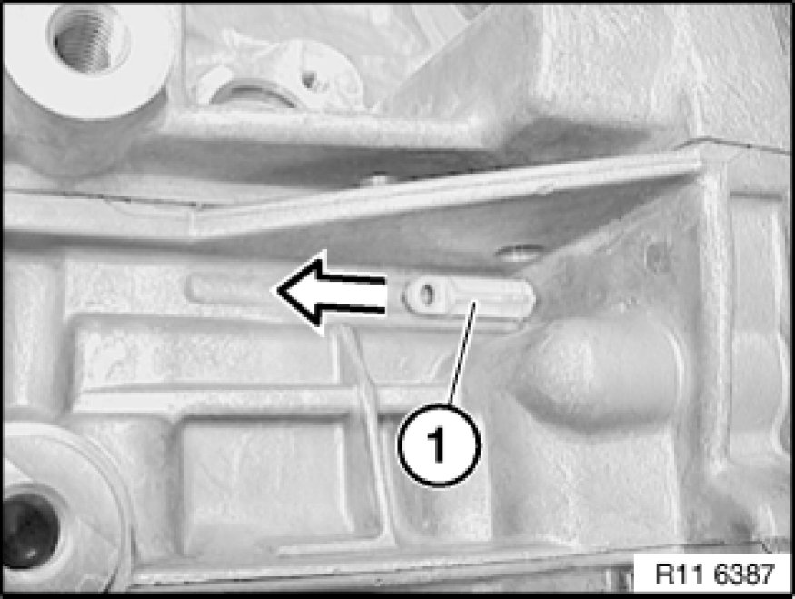
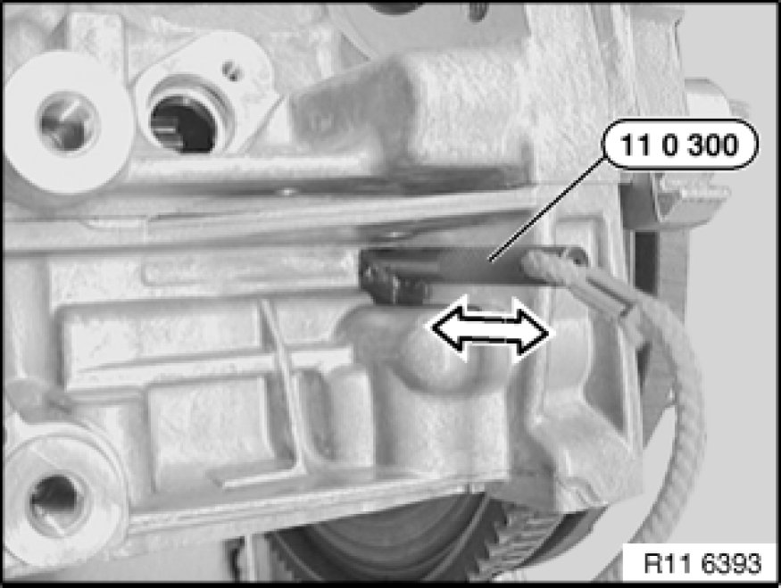

Timing Chain: Service and Repair
11 31 051 - Replacing timing chain (N52K)

Special tools required:

Necessary preliminary tasks:
- Remove cylinder head cover
- Remove all spark plugs Service and Repair
- Remove chain tensioner Service and Repair.
- Remove crankshaft radial seal at front.
- Remove drive belt tensioner.
- Remove vibration damper.

Remove fastener (1) in direction of arrow.
Installation:
Install fastener (1) with bore facing outwards.

Rotate crankshaft at central bolt into TDC position.
Slide special tool 11 0 300 in direction of arrow into special tool bore and secure crankshaft.
Important!
On vehicles with optional extra SA205 (automatic transmission), there is a large bore for the TDC position shortly before the special tool bore. This bore can be confused with the special tool bore.
If the flywheel is secured in the correct special tool bore with special tool 11 0 300, the engine can no longer be moved at the central bolt.

Important!
Do not remove special tool 11 0 300 to release central bolt (1).
Employ a second person for gripping when releasing central bolt (1).
Screw special tool 11 9 280 onto hub of vibration damper.
Release central bolt (1).
Tightening torque 11 21 1AZ Specifications.
Remove hub towards front.
Open plug (1).
Tightening torque 11 31 7AZ Specifications.

Open plug (1).
Tightening torque 11 11 7AZ Specifications.
Installation:
Replace aluminium screws.

Release bearing pin (1) from timing chain module on cylinder head.
Tightening torque 11 31 5AZ Specifications.
Release bearing pin (1) from timing chain module on crankcase.
Tightening torque 11 31 4AZ Specifications.

Important!
Install special tool 11 4 280 to release the central bolts on the inlet and exhaust adjustment units.
Secure special tool 11 4 283 to cylinder head with bolts (1).
Note:
Fit special tool 11 4 282 underneath on side of inlet camshaft.
Mount special tool 11 4 281 on inlet and exhaust camshafts.
Do not remove special tool 11 4 280.
Remove inlet and exhaust adjustment unit.
Release bolts (1) from timing chain module on cylinder head.
Tightening torque 11 31 3AZ Specifications.
Remove chain module with timing chain and sprocket wheel upwards in direction of arrow.

Important!
Note installation direction of sprocket wheel (2).
Collar (see arrow) on sprocket wheel (2) points to engine.
Incorrect assembly will result in engine damage.
Pull timing chain (1) upwards until sprocket wheel (2) engages chain guide (3).
Install timing chain (1) and sprocket wheel (2) in this position.
Installation:
Always hold timing chain (1) under tension. Timing chain (1) may jam on chain guide (3).

Install hub with central bolt.
Tighten down special tool 11 5 200 11 5 200 Spacer Ring with screws (1) to hub.

Remove tensioner for drive belt.
Screw in special tool 11 4 362 from special tool kit 11 4 360.
Mount special tool 11 9 280 on 11 5 200.
Support special tool 11 9 280 on special tool 11 4 362.
Special tool 11 0 300 secures crankshaft.
Tighten central bolt to jointing torque.
Tightening torque 11 21 1AZ Specifications.
Mark central bolt and hub with paint.

Mark special tools with colored line (1).
See picture.
Important!
Do not remove the special tool while tightening the central bolt to torsion angle.
Risk of damage!
If necessary, tighten central bolt to torsion angle with special tool 00 9 140.
Tightening torque 11 21 1AZ Specifications.
Tighten central bolt with a second person helping.
Tightening torque 11 21 1AZ Specifications.
Install inlet and exhaust adjustment units.
Install chain tensioner.

Crank engine twice.
Check timing Testing and Inspection.
If necessary, adjust valve timing Adjustments.
Assemble engine.